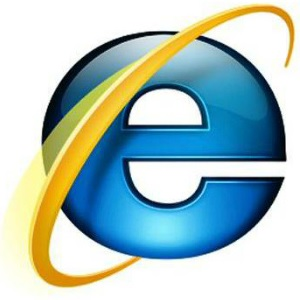

| 브라우저 이름 | 제조업체 | 특징 |
|---|---|---|
| 크롬 |
구글 | 빠른 업데이트를 통해 HTML5 표준에 가장 발 빠르게 대응하고 있어 최근 가장 많이 사용되는 브라우저입니다. |
| 파이어폭스 |
모질라 | 일반 사용자들보다 개발자들이 자주 사용하는 웹 브라우저로 개발 도구와 부가 기능들이 뛰어납니다. |
| 인터넷 익스플로러  |
마이크로소프트 | HTML5에 대한 지원은 취약하지만 아직까지 국내에서 많이 사용되고 있습니다. 윈도우 7 서비스팩1부터 지원하기 시작한 IE11을 마지막으로 더 이상 개발되지 않고 있습니다.
윈도우 10에서는 '보조 프로그램'안에 'IE11'이 포함되어 있습니다. |
| 엣지 |
마이크로소프트 | 마이크로소프트에서 인터넷 익스플로러 대신 HTML5를 지원하기 위해 새로 개발해 윈도우 10에서 기본으로 사용하는 웹 브라우저입니다.
현재는 Chromium을 기반으로 하며, 2020년 1월 15일에 릴리스되었습니다. Windows의 지원되는 모든 버전 및 macOS와 호환됩니다. |
이외에도 애플의 '사파리'나 오페라 재단의 '오페라' 브라우저도 있습니다.